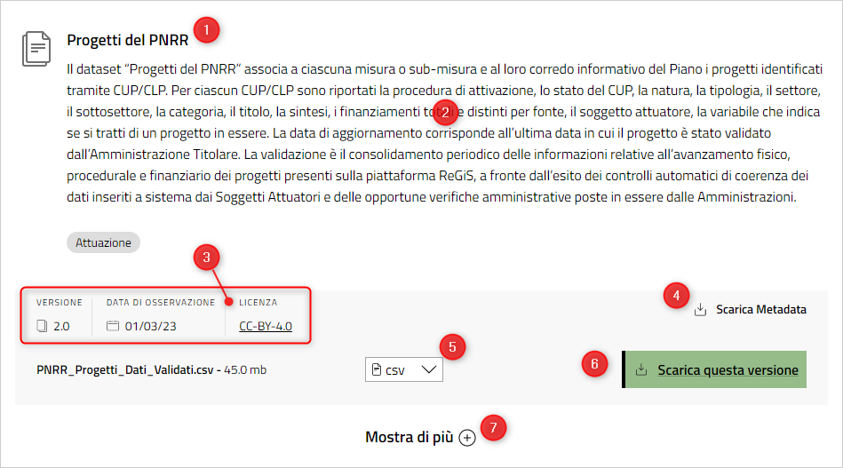
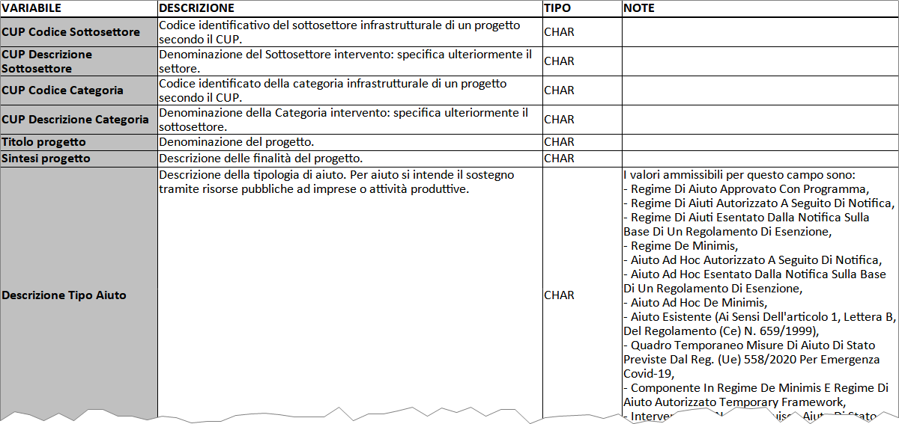

È composto da 138.782 righe e 50 colonne e in Tabella 1 è possibile vedere un paio di righe di esempio. Quindi, i progetti non validati sono 138.782.
ReGiS
Il sistema gestionale unico del PNRR
Introduzione
Il sistema ReGiS è stato sviluppato dalla Ragioneria Generale dello Stato e rappresenta la modalità unica attraverso cui le amministrazioni centrali e territoriali interessate possono adempiere agli obblighi di monitoraggio, rendicontazione e controllo delle misure e dei progetti finanziati dal Piano Nazionale di Ripresa e Resilienza (PNRR).
Da aprile 2023, sono stati pubblicati sulla sezione “open data” di ItaliaDomani (il sito ufficiale del PNRR) i primi dati da fonte ReGiS:
- Gare Aggiudicatari del PNRR
- Interoperabilità - Amministrazioni Titolari
- Localizzazione dei progetti PNRR
- Progetti del PNRR
- Soggetti del PNRR
- Universo ReGiS - Gare Aggiudicatari PNRR
- Universo ReGiS - Localizzazione del PNRR
- Universo ReGiS - Progetti
Questi dati sono sottoposti a un “processo di validazione, ossia dal consolidamento periodico delle informazioni tramite controlli automatici di coerenza e tramite le opportune verifiche amministrative poste in essere dalle Amministrazioni Titolari”.
I dataset Universo fanno riferimento a tutti i progetti su ReGiS alla data di estrazione, indipendentemente dall’essere stati sottoposti o meno al processo di validazione.
Contengono quindi dati su:
- un progetto mai validato e quindi non presente nel dataset validati;
- un progetto validato con informazioni uguali a quelle riportate nel dataset validati se le info su ReGiS non sono mai state aggiornate dopo la data di validazione;
- un progetto validato ma con info nuove o più recenti rispetto al dataset validati se ci sono stati dei nuovi aggiornamenti su ReGiS ma poi non si è rivalidato
Come sono pubblicati questi dati
In Figura 1 è possibile vedere un esempio di pagina dati di ItaliaDomani, in cui sono presenti queste informazioni:
- il titolo;
- la descrizione;
- la versione, la data di osservazione del dato e la licenza;
- il link per scaricare i metadati;
- il formato di download (a scelta tra
csv,jsonexlsx); - il tasto per scaricare i dati;
- la sezione con eventuali versioni precedenti dei dati.

Il file dei metadati è molto utile. È un file compresso in formato zip, che contiene - in formati diversi - una tabella che descrive i campi del dataset (in altre parole, le colonne della tabella). Per ognuno, il nome della campo/colonna, la descrizione, il tipo di dato (se testuale, numerico, ecc.) ed eventuali note.

Note su alcuni dati
A seguire delle note su alcuni dei dati ReGiS pubblicati su ItaliaDomani.
Universo ReGiS - Progetti
È il dato in qualche modo “centrale”, che “riporta per ciascuna misura o sub-misura del Piano il corredo informativo di tutti i progetti identificati tramite CUP/CLP presenti sulla piattaforma ReGiS”.
| Programma | Missione | Descrizione Missione | Componente | Descrizione Componente | ID Misura | Codice Univoco Misura | Descrizione Misura | ID Submisura | Codice CID | Codice Univoco Submisura | Descrizione Submisura | Amministrazione Titolare | Codice identificativo Procedura di Attivazione | Titolo procedura | Tipologia procedura di attivazione | CUP | Codice Locale Progetto | Stato CUP | CUP Codice Natura | CUP Descrizione Natura | CUP Codice Tipologia | CUP Descrizione Tipologia | CUP Codice Settore | CUP Descrizione Settore | CUP Codice Sottosettore | CUP Descrizione Sottosettore | CUP Codice Categoria | CUP Descrizione Categoria | Titolo progetto | Sintesi progetto | Descrizione Tipo Aiuto | Finanziamento - Stato | Finanziamento UE (diverso da PNRR) | Finanziamento Regione | Finanziamento Provincia | Finanziamento Comune | Finanziamento Altro Pubblico | Finanziamento Privato | Finanziamento Da Reperire | Finanziamento PNRR | Finanziamento PNC | Altri fondi | Finanziamento Totale | Finanziamento Totale Pubblico | Finanziamento Totale Pubblico Netto | Soggetto attuatore | Codice fiscale soggetto attuatore | Flag progetti in essere | Data di Estrazione |
|---|---|---|---|---|---|---|---|---|---|---|---|---|---|---|---|---|---|---|---|---|---|---|---|---|---|---|---|---|---|---|---|---|---|---|---|---|---|---|---|---|---|---|---|---|---|---|---|---|---|
| PNRR | M4 | Istruzione e ricerca | M4C1 | Potenziamento dell’offerta dei servizi di istruzione: dagli asili nido alle università | M4C1I3.2 | M4C1I3.02 | Scuola 4.0 - scuole innovative, nuove aule didattiche e laboratori | M4C1I3.2 | M4C1I3.2 | M4C1I3.02.00 | Scuola 4.0 - scuole innovative nuove aule didattiche e laboratori | MINISTERO DELL'ISTRUZIONE E MERITO | 1000000026 | DIDATTICA DIGITALE INT. (D.M. 155/2020) | Legge o Decreto di finanziamento | C37C20000260001 | 5507 | Attivo | 1 | ACQUISTO DI BENI | 0 | NUOVA FORNITURA | 11 | ISTRUZIONE FORMAZIONE E SOSTEGNI PER IL MERCATO DEL LAVORO | 70 | SCUOLA E ISTRUZIONE | 1 | FORMAZIONE E ISTRUZIONE ALL'INTERNO DELL'OBBLIGO SCOLASTICO | ATTUAZ. MISURE DDI (ART. 21 DL 137/2020) | ISTITUTO COMPRENSIVO CISTERNINO*VIA ROMA 110*ACQUISTO MATERIALE INFORMATICO | INTERVENTO CHE NON COSTITUISCE AIUTO DI STATO | 0.000000 | 0.000000 | 0.000000 | 0.000000 | 0.000000 | 0.000000 | 0.000000 | 0.000000 | 13355.000000 | 0.000000 | 0.000000 | 13355.000000 | 13355.000000 | 13355.000000 | I.C. CISTERNINO | 90042580747 | No | 2023-03-01 00:00:00 |
| PNRR | M4 | Istruzione e ricerca | M4C1 | Potenziamento dell’offerta dei servizi di istruzione: dagli asili nido alle università | M4C1I3.2 | M4C1I3.02 | Scuola 4.0 - scuole innovative, nuove aule didattiche e laboratori | M4C1I3.2 | M4C1I3.2 | M4C1I3.02.00 | Scuola 4.0 - scuole innovative nuove aule didattiche e laboratori | MINISTERO DELL'ISTRUZIONE E MERITO | 1000000109 | DM 187 DEL 26.03.2020 | Legge o Decreto di finanziamento | I42G20000080001 | 2189_B | Attivo | 1 | ACQUISTO DI BENI | 0 | NUOVA FORNITURA | 5 | INFRASTRUTTURE SOCIALI | 8 | SOCIALI E SCOLASTICHE | 87 | SCUOLE ELEMENTARI MEDIE E SUPERIORI | Acquisto di dispositivi digitali per la | I.S.I.S.S. L.EINAUDI-R.MOLARI RNIS006001 2020*VIA FELICE ORSINI*APPARATI INFORMATICI | INTERVENTO CHE NON COSTITUISCE AIUTO DI STATO | 0.000000 | 0.000000 | 0.000000 | 0.000000 | 0.000000 | 0.000000 | 0.000000 | 0.000000 | 10067.769531 | 0.000000 | 0.000000 | 10067.769531 | 10067.769531 | 10067.769531 | I.S.I.S.S. L. EINAUDI - R. MOLARI | 91161340400 | No | 2023-03-01 00:00:00 |
Il finanziamento totale dei progetti è di 121.3 miliardi di euro, di cui 94.5 miliardi (circa il 77.9%) sono finanziati dal PNRR. Il resto è per lo più dovuto ad altra fonte pubblica (20.3 miliardi di euro).
Nel valore totale anche circa 872 milioni di euro di finanziamento privato.
Guardando alle 6 missioni principali del Piano (vedi Tabella 2), emerge come quella denominata “Infrastrutture per una mobilità sostenibile” valga da sola il 22.27% del totale, distribuita soltanto su 148 progetti. Poche opere, ma di grande valore.
Altre misure al contrario, come “Rivoluzione verde e transizione ecologica”, “Digitalizzazione, innovazione, competitività e cultura” e “Istruzione e ricerca”, sono molto più frammentate, con interventi più piccoli per lo più distribuiti su tutto il territorio.
| Missione | Numero di progetti | Somma in euro |
|---|---|---|
| Infrastrutture per una mobilità sostenibile | 148 | 21.042.007.262 |
| Rivoluzione verde e transizione ecologica | 40.586 | 20.709.875.589 |
| Digitalizzazione, innovazione, competitività e cultura | 46.158 | 16.850.568.267 |
| Istruzione e ricerca | 36.646 | 16.724.775.533 |
| Inclusione e coesione | 7.905 | 11.684.766.521 |
| Salute | 7.339 | 7.472.070.482 |
Interessante guardare ad alcune suddivisioni categoriche dei progetti. Tra queste ad esempio quella dei Sottosettori: in Tabella 3 vediamo i primi 10 per valore.
Abbiamo evidenziato quello denominato “Sociali e scolastiche”, e inserito a seguire le “Misure” di questa voce, in Tabella 4, per dare un’idea di come sia possibile leggere ed esplorare questi dati.
| sottosettore | valore |
|---|---|
| FERROVIE | 22.231.212.069 |
| SOCIALI E SCOLASTICHE | 11.997.210.796 |
| PROGETTI DI RICERCA PRESSO UNIVERSITA' E ISTITUTI DI RICERCA | 6.490.297.520 |
| SANITARIE | 5.659.763.223 |
| INFRASTRUTTURE PER TELECOMUNICAZIONI | 4.936.383.631 |
| TRASPORTO URBANO | 4.550.968.018 |
| RISORSE IDRICHE E ACQUE REFLUE | 3.835.774.702 |
| ALTRI SERVIZI PER LA COLLETTIVITA' | 3.781.067.685 |
| ALTRE INFRASTRUTTURE SOCIALI | 3.655.973.066 |
| STRADALI | 3.313.645.294 |
| misura | valore |
|---|---|
| Piano di messa in sicurezza e riqualificazione dell'edilizia scolastica | 4.064.826.673 |
| Piano per asili nido e scuole dell'infanzia e servizi di educazione e cura per la prima infanzia | 3.495.630.625 |
| Costruzione di nuove scuole mediante la sostituzione di edifici | 1.174.499.296 |
| Interventi per la resilienza, la valorizzazione del territorio e l'efficienza energetica dei Comuni | 1.025.105.710 |
| Investimenti in progetti di rigenerazione urbana, volti a ridurre situazioni di emarginazione e degrado sociale | 601.308.972 |
Universo ReGiS - Localizzazione del PNRR
È un dato che ha suscitato molto interesse, perché consente di avere una restituzione geografica dei progetti.
Associa a ciascun progetto CUP/CLP presente sulla piattaforma ReGiS alla data di estrazione le informazioni su regione, provincia, comune, indirizzo e Cap di localizzazione del progetto. La relazione tra CUP e territori non è biunivoca: nel caso in cui un CUP sia localizzato su più territori (è il caso, ad esempio di una ferrovia) è riportato tante volte quante sono i luoghi in cui il progetto è realizzato.
È composto da 164.482 righe e 14 colonne e in Tabella 5 è possibile vedere un paio di righe di esempio.
| Codice Univoco submisura | Descrizione Submisura | CUP | Codice Locale Progetto | Regione | Descrizione Regione | Provincia | Descrizione Provincia | Comune | Descrizione Comune | Indirizzo | CAP | Data di Estrazione | COD_ISTAT_COMUNE |
|---|---|---|---|---|---|---|---|---|---|---|---|---|---|
| M1C1I1.02.00 | Abilitazione al cloud per le PA locali | F31C22001330006 | PRJ_120SCU0622X_000676 | 16 | PUGLIA | 71 | FOGGIA | 56 | TORREMAGGIORE | 71017 | 2023-03-01 00:00:00 | 071056 | |
| M4C1I2.01.00 | Didattica digitale integrata e formazione sulla transizione digitale del personale scolastico | F66J20001130001 | 1042_AC | 15 | CAMPANIA | 63 | NAPOLI | 49 | NAPOLI | 80100 | 2023-03-01 00:00:00 | 063049 |
Alcune note:
- le localizzazioni sono di più dei progetti, perché ovviamente un singolo progetto può essere sviluppato in più luoghi;
- la localizzazione è definita, in termini di taglio geografico amministrativo di maggiore dettaglio, a livello di Comune;
- se si raggruppano queste righe per
Descrizione SubmisuraeCUP, si ottiene lo stesso numero di recordi del dataset dei progetti; - la colonna
COD_ISTAT_COMUNEche si vede in Tabella 5, che contiene il codice Istat del Comune, non è presente nei dati originali. L’abbiamo inserita, a partire dai codici Provincia e Comune, per facilitare le correlazioni e le analisi territoriali.
Alcune localizzazioni NON HANNO il “taglio” comunale
Alcuni progetti, nelle colonne che descrivono il Comune, hanno associato il valore AMBITO NAZIONALE o TUTTI I COMUNI. Si tratta di circa 32.9 miliardi di euro di finanziamenti PNRR, ovvero il 34.79% del totale.
E anche nelle colonne che descrivono Regioni e Province, esistono dei raggruppamenti che coprono o un’intera regione o un’intera provincia.
È corretto che sia così, perché alcuni progetti sono sviluppati o a carattere nazionale, o su raggruppamenti territoriali più ampi del Comune (la Provincia e la Regione). Lo sottolineiamo perché alcuni dei dati di sintesi a seguire, sono basati soltanto sui dati dei progetti correlati in modo diretto a uno o più Comuni.
Guardando ai soli progetti assegnati a uno o più Comuni, cambia la classiffica delle missioni con valore di finanziamento PNRR maggiore: la prima in questo caso è quella denominata “Rivoluzione verde e transizione ecologica”.
Questa è anche quella con il maggior numero di localizzazioni di taglio comunale. In Tabella 6 è possibile constatare la cosa, insieme al numero di progetti e al finanziamento totale (per tutte e sei le missioni).
| Missione | Numero progetti | Numero comuni | Finanz. PNRR (€) | Finanz. totale (€) |
|---|---|---|---|---|
| Rivoluzione verde e transizione ecologica | 40.502 | 7.865 | 19.393.489.468 | 21.126.996.942 |
| Digitalizzazione, innovazione, competitività e cultura | 45.937 | 7.602 | 6.411.490.159 | 6.426.075.171 |
| Inclusione e coesione | 7.616 | 6.508 | 11.228.021.807 | 12.907.096.777 |
| Istruzione e ricerca | 36.007 | 4.375 | 14.831.744.518 | 15.014.149.069 |
| Salute | 7.252 | 1.471 | 7.238.945.967 | 7.734.049.659 |
| Infrastrutture per una mobilità sostenibile | 24 | 89 | 2.307.771.344 | 3.589.948.896 |
Arricchire i dati ReGiS con le informazioni presenti nelle altre fonti
Questa fonte di dati nonostante sia la principale, è quella di più recente pubblicazione (è andata online dopo la pubblicazione di questo vademecum).
Le altre fonti non sono da considerarsi superate e/o inutili, ma è tutto l’insieme di queste a restituire il patrimonio informativo migliore disponibile.
Essenziali per le correlazioni tra queste i Codici Unici di Progetto (CUP) e i Codici Identificativi Gara (CIG).
Partecipa
Se vuoi fare delle proposte su questo vademecum, se vuoi raccontarci come l’hai usato, se hai bisogno di aiuto in merito, ecco come fare.